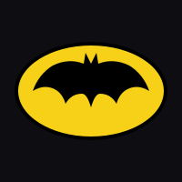

História
O jogo da velha
O jogo da velha é um dos jogos mais simples e mais antigos que existem. Jogos parecidos, com três peças em linha, já eram jogados na Roma Antiga, onde um deles era chamado de terni lapilli.
As regras são fáceis: dois jogadores se alternam marcando um tabuleiro 3x3, e vence quem completar uma linha, coluna ou diagonal com suas três peças. Se o tabuleiro encher sem vencedor, o jogo termina empatado.
Os heróis do jogo

Superman estreou em Action Comics #1, em 1938, e ajudou a criar o gênero dos super-heróis.
Batman apareceu pela primeira vez em Detective Comics #27, em 1939, como um detetive mascarado de Gotham City.
Flash, o herói mais rápido da DC, estreou em Flash Comics #1, em 1940.